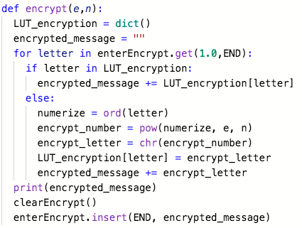
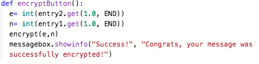

The program takes an input or message from the user and then encrypts it using the public keys, e and n, resulting in the output.
After encrypting the message, the program can decrypt the output using the private keys, n and d. The functionality of the program that is demonstrated is the user
typing their message and then after they enter values for the public keys, e and n, the program encrypts the message. The same occurs in the decryption process
which occurs after the user saves and opens the file with their encrypted message. After entering values for the private keys, d and n, the program decrypts the
encrypted message. The input was the user’s message along with the values for the public key. Once the message was encrypted, the user entered values for the private
key and then clicked the “decrypt” button which resulted in the decrypted output.
RSA Response 3c:


The identified procedure gets the message the user inputted and uses different methods like numerize function and power function to
encrypt that message. It contributes to the overall functionality of the program because it encrypts the user’s message which makes up half of the program's purpose.
The encrypt procedure provides an encrypted message that is then used for other purposes like decryption. The algorithm in the identified procedure works by first getting
the message the user puts in the encryption textbox. Then, each letter in the message is numerized, converted to numbers. After this occurs, the numbers are converted
into the encrypted message thanks to the use of the “pow” and “char” functions. A dictionary function is used to store the encrypted letters so that if any repeat, there
is no need to go through the procedure again. Once all of the letters are encrypted and combined in one message, the encrypted message is displayed in the same encryption textbox.